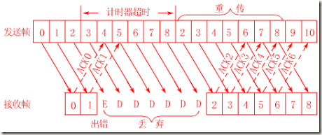

TCP 滑动窗口协议
什么是滑动窗口协议？ 一图胜千言，看下面的图。简单解释下，发送和接受方都会维护一个数据帧的序列，这个序列被称作窗口。发送方的窗口大小由接受方确定，目的在于控制发送速度，以免接受方的缓存不够大，而导致溢出，同时控制流量也可以避免网络拥塞。下面图中的4,5,6号数据帧已经被发送出去，但是未收到关联的ACK，7,8,9帧则是等待发送。可以看出发送端的窗口大小为6，这是由接受端告知的（事实上必须考虑拥塞窗口cwnd，这里暂且考虑cwnd>rwnd）。此时如果发送端收到4号ACK，则窗口的左边缘向右收缩，窗口的右边缘则向右扩展，此时窗口就向前“滑动了”，即数据帧10也可以被发送。

下面就滑动窗口协议做出更详细的说明，这里为了简单起见设定发送方窗口大小为2，接受方大小为1。看下面图：
 一：初始态，发送方没有帧发出，发送窗口前后沿相重合。接收方0号窗口打开，等待接收0号帧；
二：发送方打开0号窗口，表示已发出0帧但尚确认返回信息。 此时接收窗口状态不变；
三：发送方打开0、1号窗口，表示0、1号帧均在等待确认之列。至此，发送方打开的窗口数已达规定限度，在未收到新的确认返回帧之 前，发送方将暂停发送新的数据帧。接收窗口此时状态仍未变；
四：接收方已收到0号帧，0号窗口关闭，1号窗口打开，表示准备接收1号帧。此时发送窗口状态不 变；
五：发送方收到接收方发来的0号帧确认返回信息，关闭0号窗口，表示从重发表中删除0号帧。此时接收窗口状态仍不变
六：发送方继续发送2号帧，2号窗口 打开，表示2号帧也纳入待确认之列。至此，发送方打开的窗口又已达规定限度，在未收到新的确认返回帧之前，发送方将暂停发送新的数据帧，此时接收窗口状态 仍不变；
七：接收方已收到1号帧，1号窗口关闭，2号窗口打开，表示准备接收2号帧。此时发送窗口状态不变；
八：发送方收到接收方发来的1号帧收毕的确认信 息，关闭1号窗口，表示从重发表中删除1号帧。此时接收窗口状态仍不变。
一：初始态，发送方没有帧发出，发送窗口前后沿相重合。接收方0号窗口打开，等待接收0号帧；
二：发送方打开0号窗口，表示已发出0帧但尚确认返回信息。 此时接收窗口状态不变；
三：发送方打开0、1号窗口，表示0、1号帧均在等待确认之列。至此，发送方打开的窗口数已达规定限度，在未收到新的确认返回帧之 前，发送方将暂停发送新的数据帧。接收窗口此时状态仍未变；
四：接收方已收到0号帧，0号窗口关闭，1号窗口打开，表示准备接收1号帧。此时发送窗口状态不 变；
五：发送方收到接收方发来的0号帧确认返回信息，关闭0号窗口，表示从重发表中删除0号帧。此时接收窗口状态仍不变
六：发送方继续发送2号帧，2号窗口 打开，表示2号帧也纳入待确认之列。至此，发送方打开的窗口又已达规定限度，在未收到新的确认返回帧之前，发送方将暂停发送新的数据帧，此时接收窗口状态 仍不变；
七：接收方已收到1号帧，1号窗口关闭，2号窗口打开，表示准备接收2号帧。此时发送窗口状态不变；
八：发送方收到接收方发来的1号帧收毕的确认信 息，关闭1号窗口，表示从重发表中删除1号帧。此时接收窗口状态仍不变。
1比特滑动窗口协议? 上面说的只是滑动窗口协议的理论，实际应用中又有不同。首先就是停等协议(stop－and－wait)，这时接受方的窗口和发送方的窗口大小都是1，1个比特就够表示了，所以也叫1比特滑动窗口协议。发送方这时自然发送每次只能发送一个，并且必须等待这个数据包的ACK，才能发送下一个。虽然在效率上比较低，带宽利用率明显较低，不过在网络环境较差，或是带宽本身很低的情况下，还是适用的。看下面的流程图：

后退n协议? 停等协议虽然实现简单，也能较好的适用恶劣的网络环境，但是显然效率太低。所以有了后退n协议，这也是滑动窗口协议真正的用处，这里发送的窗口大小为n，接受方的窗口仍然为1。具体看下面的图，这里假设n=9： 首先发送方一口气发送10个数据帧，前面两个帧正确返回了，数据帧2出现了错误，这时发送方被迫重新发送2-8这7个帧，接受方也必须丢弃之前接受的3-8这几个帧。 后退n协议的好处无疑是提高了效率，但是一旦网络情况糟糕，则会导致大量数据重发，反而不如上面的停等协议，实际上这是很常见的，具体可以参考TCP拥塞控制。

选择重传协议？ 后退n协议的另外一个问题是，当有错误帧出现后，总是要重发该帧之后的所有帧，毫无疑问在网络不是很好的情况下会进一步恶化网络状况，重传协议便是用来解决这个问题。原理也很简单，接收端总会缓存所有收到的帧，当某个帧出现错误时，只会要求重传这一个帧，只有当某个序号后的所有帧都正确收到后，才会一起提交给高层应用。重传协议的缺点在于接受端需要更多的缓存。